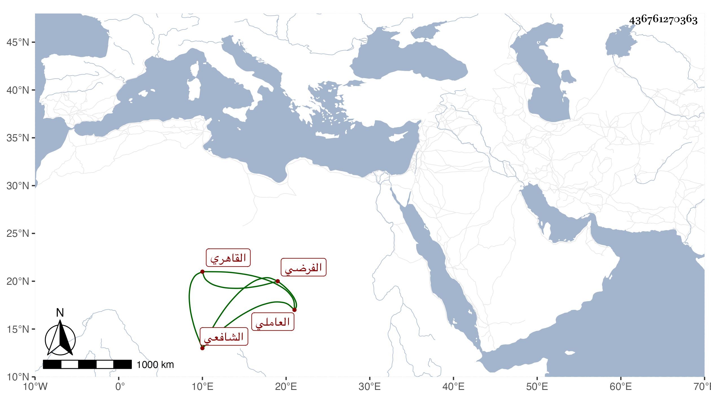

0902Sakhawi.DawLamic.ITO20230111-ara1.EIS1600.436761270363
Biography ID: 436761270363
أحمد بن شاور بن عيسى الشهاب العاملي ثم القاهري الشافعي الفرضي تقدم في الفرائض والحساب ومتعلقاتهما ، ومن شيوخه الشمس الكلائي ووصفه الزين العراقي في طبقة الشيخ ، وقال شيخنا في أنبائه كان عالما بالفرائض مشاركا في غيرها . مات في صفر سنة اثنتين . قلت وأخذ عنه ممن لقيته الجمال عبد الله ابن محمد بن الرومي الحنفي وكتبت له كما في ترجمته من معجمي إجازة بليغة والشهاب السيرجي وله تقريظ لمنظومة أثبته في ترجمته .
